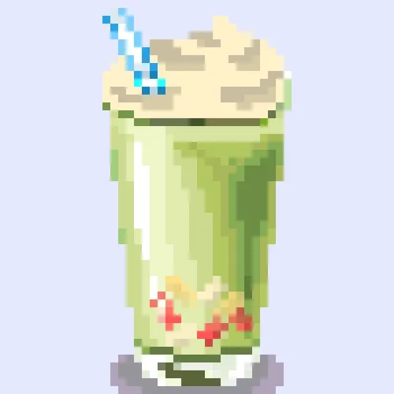

Home
Menu
STEPS
Unique Bubble Tea
Mystery-D

Tea:
oolong tea
Milk or Creamer
:almond milk, non-dairy creamer
Sweetener
:flavored syrup
Tapioca Pearls
: The chewy, round balls made from tapioca starch.
Additional
:strawberry, mango, peach.